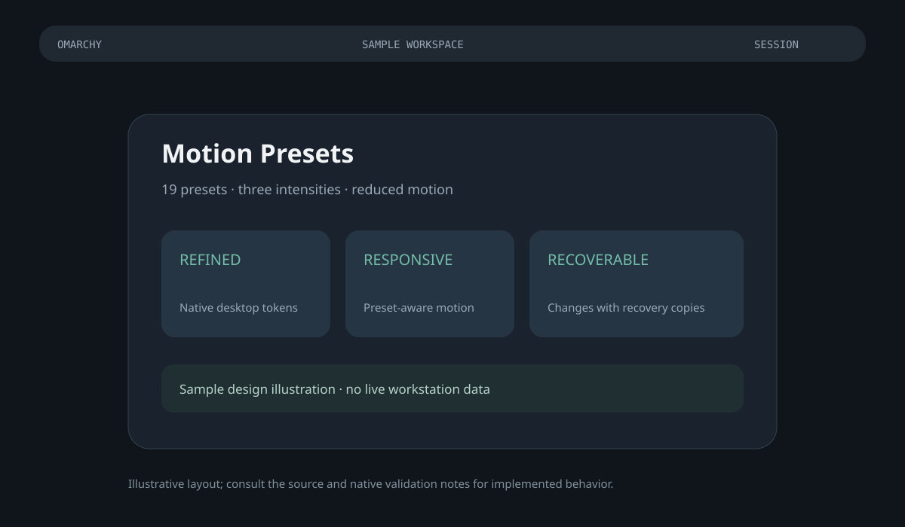

OMARCHY COMMUNITY · REFINEMENT UPDATE
Motion Presets
19 presets · three intensities · reduced motion

Sample illustration. Native implementation and validation are documented in the repository. Existing desktop colors, fonts and themes remain user choices.